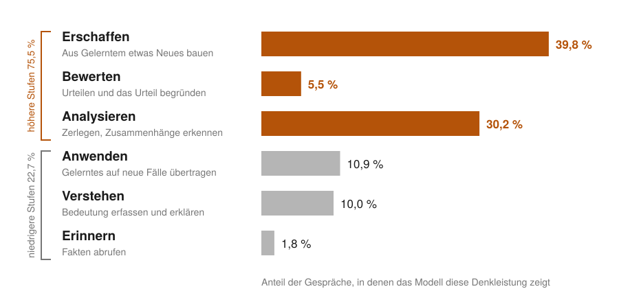

1 Einleitung
Montagmorgen, fünfte Semesterwoche. Professorin Katrin Albers hat für ihre 120 Studierenden in Technischer Mechanik wieder keine Übungstests geschafft, obwohl sie weiß, dass häufiges Abfragen wirkt. Ein Kollege schwärmt, sein Chatbot schreibe ihm in Minuten zwanzig Aufgaben samt Lösungsweg; eine Kollegin will ihren Studierenden einfach einen KI-Tutor freischalten. Albers probiert es in der Mittagspause mit der kostenlosen Version, und schon die erste Lösung ist falsch. Am Nachmittag gibt ein Student eine fehlerfreie Hausübung ab und kann in der Sprechstunde keinen Schritt davon erklären. Albers fragt sich, ob die KI ihr die Arbeit abnimmt oder ihren Studierenden das Lernen.
Die Szene ist aus Gesprächen in Workshops mit Lehrenden zusammengesetzt.
Wie sehr stimmen Sie den vier Aussagen zu? Richtig oder falsch gibt es hier noch nicht: Jede Aussage wird an der Stelle im Kapitel aufgelöst, die sie beantwortet. Wer sich vorher festlegt, liest gezielter.
Fast alle Studierenden nutzen KI inzwischen auch für Prüfungsleistungen.
Auflösung in Kapitel 1.1
Die größte Gefahr generativer KI für das Lernen besteht darin, dass Studierende in Prüfungen täuschen.
Auflösung in Kapitel 1.2
Wer mit der kostenlosen Version eines Chatbots in seinem Fach schlechte Ergebnisse erhält, weiß, was KI dort leisten kann.
Auflösung in Kapitel 1.2
Ein KI-Tutor verbessert das Lernen, sobald die Studierenden Zugang zu ihm erhalten.
Auflösung in Kapitel 1.3
- erklären, bei welchen zwei Lehrproblemen generative KI hilft, und einordnen, wie verbreitet sie bei Studierenden und Lehrenden genutzt wird;
- begründen, warum die Auslagerung des Denkens das Lernen stärker gefährdet als das Täuschen und warum schwache Zugänge das Urteil über KI verzerren;
- die Bedingungen benennen, unter denen KI nach der Forschung seit 2025 das Lernen stützt, und Ihren eigenen Weg durch dieses Buch wählen.
Die Kernaussagen am Kapitelende sind nach diesen drei Zielen geordnet.
Wie kann generative künstliche Intelligenz (KI) in der Lehre helfen? Hoffnung besteht für die zwei Probleme, die Albers’ Montag prägen: Studierende haben individuelle Bedürfnisse, Lehrende nur begrenzt Zeit, und gerade wirksame Methoden wie häufige kleine Tests oder individuelles Feedback kosten viel Vorbereitung (Brown et al., 2014; Dunlosky et al., 2013; Hattie, 2023, Kap.13); ausführlich behandelt das Kapitel 3.1. Für die Lehre sind große Sprachmodelle (LLM, Large Language Models) vor allem „generally faster“ (McAfee, 2024): Übungsaufgaben, Anwendungsbeispiele, Quizfragen und Rollenspiele entstehen mit KI deutlich schneller (Meincke et al., 2024; E. R. Mollick & Mollick, 2023). Der Berg ist noch da, aber mit dem E-Bike kommt man weiter. Wie weit, hängt an drei Fragen, die dieses Kapitel der Reihe nach beantwortet: Wie verbreitet ist die Nutzung, was geht dabei schief, und was hilft?
1.1 Wie verbreitet ist KI-Nutzung?
Für Studierende sind Sprachmodelle zum Standard geworden. In der britischen Befragung des Higher Education Policy Institute vom Dezember 2025 (n = 1.054 Vollzeitstudierende) nutzten 95 % KI in irgendeiner Form und 94 % auch für Prüfungsleistungen; 12 % übernahmen KI-Text direkt in die Abgabe, 2024 waren es 3 % (Stephenson & Armstrong, 2026). Deutsche Daten des CHE bestätigen das Bild: Im Wintersemester 2025/26 nutzten 81 Prozent von 28.584 befragten Studierenden an 202 Hochschulen KI-Werkzeuge mindestens wöchentlich, und jede zweite Person nutzte sie „als Tutor bzw. Lernpartner“, mit großen Fachunterschieden zwischen Wirtschaftsinformatik (72 Prozent) und Jura (19 Prozent) (Horstmann et al., 2026). Die britischen Befunde zeigen zugleich eine gespaltene Studierendenschaft: Die einen gewinnen Zeit für tieferes Lernen, andere lagern es aus („I’m not using my brain at all“) (Stephenson & Armstrong, 2026).
Genutzt wird vor allem auf den oberen Stufen. Eine Auswertung von einer Million anonymisierter Chats mit Universitätskonto zeigt, dass Studierende die Modelle vor allem zum Erstellen neuer Inhalte und zum Analysieren komplexer Themen einsetzen, also auf den höheren Ebenen der Bloomschen Taxonomie (Abbildung 1.1) (Handa et al., 2025).

Auf den produktiven Umgang fühlen sich Studierende schlecht vorbereitet. In der CHE-Befragung vom Wintersemester 2024/25 bewerteten sie das Angebot zum Erwerb von KI-Kompetenzen an ihrer Hochschule mit 2,7 von 5 Sternen (Hüsch et al., 2025). Hochschulen müssen deshalb Prüfungen anpassen und den Umgang mit den Werkzeugen lehren.
„Fast alle Studierenden nutzen KI inzwischen auch für Prüfungsleistungen.“
Auflösung: ja. In der britischen HEPI-Befragung nutzten 94 % KI auch für Prüfungsleistungen. Auf den produktiven Umgang fühlen sich viele aber schlecht vorbereitet: Dass Studierende KI nutzen, heißt nicht, dass sie es gut tun.
Bei den Lehrenden ist die Spanne weit. In einer bundesweiten Befragung von 626 Hochschullehrenden (Dezember 2024 bis Januar 2025) nutzten 12 Prozent KI in der Lehre gar nicht, weitere 33 Prozent selten oder sehr selten und knapp 15 Prozent sehr häufig. Mit Abstand am häufigsten genannt wurde die kostenlose Version von ChatGPT (66 Prozent), die Bezahlversion nur von 23 Prozent (von Garrel et al., 2026). International ergibt sich dasselbe Muster: Von 1.681 Lehrenden aus 28 Ländern hatten 61 Prozent KI in der Lehre schon eingesetzt, die große Mehrheit aber nur in geringem bis mittlerem Umfang (Digital Education Council, 2025), und ein Review von fünfzehn deutschen Studien findet, dass Lehrende KI seltener und selektiver nutzen als Studierende (Bosse et al., 2026).
In Workshops mit Lehrenden fällt zudem auf, wie unsystematisch die Nutzung meist ist: Sie findet fast nur im Chatfenster statt, man übernimmt, was brauchbar wirkt, und beginnt beim nächsten Mal von vorn, ohne Vorlagen, eigene Quellensammlungen, Projekte oder Agenten. Ethan Mollick nennt diese Lücke den Fähigkeitsüberhang (capability overhang): den Abstand zwischen dem, was die Modelle können, und dem, was fast alle mit ihnen tun (E. Mollick, 2026b). Für die Lehre ist der Überhang Befund und Chance zugleich, denn schon mit den heutigen Modellen wäre viel mehr möglich.
1.2 Was geht schief?
Die Metapher mit dem E-Bike trägt auch die Nebenwirkung: Wer nur noch mit Motor fährt, verliert Muskeln. Das zeigt sich zuerst beim Üben. In einem Feldexperiment mit knapp tausend Oberstufenschülern verbesserte ein Tutor im Stil des normalen ChatGPT die Übungsleistung um 48 Prozent; als der Zugang in der Prüfung fehlte, lagen dieselben Schüler 17 Prozent unter der Kontrollgruppe, die nie Zugang hatte (Bastani et al., 2025). Die Übungen waren gelöst, gelernt war weniger als ohne Hilfe.
Die Arbeit verschiebt sich vom Erarbeiten zum Prüfen. In einer Befragung von 319 Wissensarbeitern sank mit Sprachmodellen der Aufwand für die Recherche selbst, während Koordination, kritische Prüfung der Ergebnisse und ihre Integration in ein Gesamtergebnis mehr Gewicht bekamen (Lee et al., 2025). Anders als die Websuche, bei der man einzelne dornige Zweige erntet, liefert das Sprachmodell das ganze Aufgabenbündel fertig verschnürt. Wer per Chatbot statt per Suchmaschine recherchiert, setzt sich entsprechend weniger kritisch mit dem Thema auseinander (Mittal et al., 2026, Preprint). Ein vielgelesener Artikel trägt den Titel „Everybody is cheating their way through college“ (Walsh, 2025); der Titel lenkt den Blick auf die Messung, die größere Gefahr liegt beim Lernen selbst.
„Die größte Gefahr generativer KI für das Lernen besteht darin, dass Studierende in Prüfungen täuschen.“
Auflösung: eher nicht. Täuschen verfälscht die Messung einer Leistung. Wer dagegen das Denken auslagert, übt die geprüften Schritte nie und lernt sie nicht, wie der Einbruch um 17 Prozent in der Prüfung zeigt. Was dabei verloren geht, nennt die Lernforschung erwünschte Schwierigkeiten (Kapitel 1.3).
Hinzu kommt ein Zugangsproblem. „KI nutzen“ heißt seit Ende 2025 Delegation an Agenten, die Werkzeuge einsetzen, mehrstufig arbeiten und Zwischenergebnisse selbst prüfen (E. Mollick, 2026a) (Kapitel 2.1.1). Kostenlose Tarife und „Auto“-Auswahl liefern dagegen oft schwächere Modellvarianten ohne Reasoning und mit kleinem Werkzeugkasten, und genau diesen Zugang nutzen die meisten Lehrenden: Wer am Modell spart, spart am Ergebnis.
„Wer mit der kostenlosen Version eines Chatbots in seinem Fach schlechte Ergebnisse erhält, weiß, was KI dort leisten kann.“
Auflösung: nein. Kostenlose und automatisch gewählte Varianten antworten oft ohne Nachdenkphase und ohne Werkzeuge. Was ein Sprachmodell im eigenen Fach leistet, zeigt erst ein starkes Modell mit passender Oberfläche und Werkzeugkasten (Kapitel 2.1.1).
1.3 Was hilft?
So schlimm muss es nicht werden. Im selben Experiment gab ein zweiter Tutor Hinweise statt Lösungen: Er hob die Übungsleistung um 127 Prozent und ließ in der Prüfung keinen Schaden zurück (Bastani et al., 2025). Lehre kann also erwünschte Schwierigkeiten im Sinne von Bjork & Bjork (2011) erhalten, auch wenn die Studierenden zu Hause starke Modelle nutzen. Die Forschung seit 2025 nennt drei Bedingungen dafür; Kapitel 3.5 stellt sie ausführlich dar.
Die Einbettung trägt, nicht das Werkzeug. In einer randomisierten Studie in 83 indischen Internatsschulen erhielten alle Zugang zur selben Lernplattform; große Lerngewinne entstanden nur dort, wo betreute Lernzeiten mit Aufsichtspersonen eingeplant waren (Oreopoulos et al., 2026). Anleitung wirkt, Ermutigung nicht: In einem Ökonometrie-Kurs änderte die Ermutigung zum Tutor nichts, eine Anleitung zur tutoriellen Nutzung hob die Prüfungsleistung um 0,21 Standardabweichungen und die Bestehensquote um zwölf Prozentpunkte (Gallegos, 2026).
„Ein KI-Tutor verbessert das Lernen, sobald die Studierenden Zugang zu ihm erhalten.“
Auflösung: nein. Der Zugang allein bewirkt wenig. Lerngewinne entstehen, wo die Nutzung in betreute Lernzeiten eingebettet und angeleitet wird und wo der Tutor Hinweise statt fertiger Lösungen gibt.
Die Leitplanke gehört in Aufgabe und Rückmeldung. Eine Rückmeldung, die Lernenden zeigt, was das Abschreiben einer KI-Lösung für ihr eigenes Können bedeutet, halbierte in einem Experiment die Auslagerung (Maier et al., 2026); Feedback, das zuerst zur Reflexion auffordert und die Kritik danach liefert, schnitt beim späteren Transfer ohne KI besser ab als direkte KI-Kritik (Ates, 2026). Ein Beispiel aus der Praxis ist das „AI-Sandwich“ von Jon Ippolito, in dem selbst geführte Interviews zum Maßstab für den KI-Text werden (Kapitel B.5.4).
Auf der Ebene des Studiengangs kommen vier Hebel hinzu: Prüfungen nach den vier Säulen Mündlichkeit, Prozessorientierung, Kontextualisierung und Kollaboration (Kapitel 5.4), Richtlinien im Rahmen der KI-Verordnung (Kapitel 5.5.2), eine Dokumentation der KI-Nutzung durch die Studierenden (Kapitel 5.6) und die Integration in den ganzen Kurs (Kapitel 5.7).
1.4 Was Sie im Buch erwartet
In den Workshops kehren drei Fragen immer wieder. Seit 2024 haben sie vor allem im Netzwerk hdw nrw Lehrende aus nahezu allen Fächergruppen zusammengeführt. Die erste Frage ist eine Sorge: Entwertet KI Hausarbeiten, deren Ergebnis ein Sprachmodell in Minuten liefert, die „Homework Apocalypse“ (E. R. Mollick, 2023)? Die zweite ist praktisch: Wie hilft KI bei Recherche, Aufgabenerstellung und Rückmeldung? Die dritte ist Neugier: Was wird möglich, das bisher zu aufwendig war, etwa Simulationen, in denen Studierende verhandeln oder ein Unternehmen steuern (E. R. Mollick & Mollick, 2024)? Das Buch beantwortet sie über vier Rollen der KI (Kapitel 4): als Hiwi, der Ihnen zuarbeitet (Kapitel 4.1), als Copilot, mit dem Studierende schreiben und programmieren (Kapitel 4.2), als Tutor, der erklärt und abfragt (Kapitel 4.3), und als Simulator, der ein Gegenüber spielt (Kapitel 4.4). Mit der Rolle wechselt, wer das Ergebnis prüft.
Darunter liegen die Grundbegriffe (Kapitel 2) und die Lernmechanismen (Kapitel 3), darauf bauen die Umsetzung in Prüfung und Kurs (Kapitel 5) und die Beispiele aus der eigenen Lehre (Kapitel 6). Dort bauen Studierende mit Praxispartnern Assistenten, die auf den Dokumenten eines Unternehmens antworten (Kapitel 6.3.5), und entwickeln Tutoren, Planspiele und Karriereberater für andere Studierende (Kapitel 6.2.2, Kapitel 6.3.3, Kapitel 6.3.4). Die Anhänge sammeln Prompts (Anhang A, Anhang B), Rollenspiele (Anhang C), Arbeitsumgebung und Agenten (Anhang D), Praxis-Primer für Lernmaterial (Anhang E) und Lösungshinweise (Anhang F). Welche Kapitel Sie davon brauchen, hängt von Ihrem Vorwissen ab; das Vorwort führt dazu mit einem Selbsttest zu einem von vier Lernpfaden.
- Warum schadet ein Chatbot, der jede Übungsfrage richtig beantwortet, dem Lernen? (Kapitel 3)
- Wann ist die KI Ihr Hiwi, wann der Tutor Ihrer Studierenden, und warum wechselt damit die Verantwortung? (Kapitel 4)
- Was muss beim Menschen bleiben, wenn man eine Aufgabe an einen Agenten delegiert? (Kapitel D.1)
- Warum hilft ein Lied beim Merken einer Formel, aber nicht beim Anwenden? (Kapitel E.4)
- Wie echt muss ein simuliertes Gegenüber sein, damit Studierende daran üben? (Kapitel 4.4, Anhang C)
Fünf Formate zeigen, was 2026 mit KI entsteht: eine Prozessanimation, in der sich vor dem Engpass die Arbeit staut (Goldratt & Cox, 2014; Little, 1961), eine Präsentationsfolie nach Regelwerk, ein Lernsong, ein Lernspiel und ein Rollenspiel. Blättern Sie mit den Pfeilen; unter jedem Beitrag führt ein Link zur Stelle im Buch.
Zu Lernziel 1: Lehrprobleme und Verbreitung
- Generative KI ist für die Lehre ein Kraftverstärker: Der Berg bleibt, aber mit dem E-Bike kommt man weiter. Sie senkt vor allem den Aufwand für Methoden, die didaktisch wirksam, aber zeitintensiv sind.
- Studierende nutzen Sprachmodelle flächendeckend, auch für Prüfungsleistungen, fühlen sich aber auf den produktiven Umgang schlecht vorbereitet. Bei Lehrenden reicht die Spanne von intensiver Nutzung bis zu keiner; genutzt wird meist unsystematisch und im Chatfenster. Der Fähigkeitsüberhang ist groß.
Zu Lernziel 2: Was schiefgeht
- Die Hauptgefahr ist nicht das Täuschen, sondern die Auslagerung des Denkens: Ein Tutor ohne Leitplanken hebt die Übungsleistung und senkt die Prüfungsleistung.
- Schwache Zugänge verzerren das Urteil. „KI nutzen“ heißt Delegation an Agenten mit Werkzeugen; wer mit kostenlosen Varianten ohne Reasoning und Werkzeuge arbeitet, hält deren Schwächen für die Grenzen der Technik.
Zu Lernziel 3: Was hilft
- Über die Lernwirkung entscheiden Einbettung, Anleitung und Gestaltung, nicht der Zugang zum Werkzeug: betreute Lernzeiten, angeleitete statt nur ermutigte Nutzung und Leitplanken in Aufgabe und Rückmeldung, die erwünschte Schwierigkeiten erhalten.
Wiederholen
- Bei welchen zwei Lehrproblemen kann generative KI helfen?
- Warum ist für das Lernen die Auslagerung des Denkens gefährlicher als das Täuschen in Prüfungen, und welches Konzept der Lernforschung beschreibt, was dabei verloren geht?
Anwenden
- Ihre Hochschule schaltet allen Studierenden einen KI-Tutor frei. Welche zwei Bedingungen aus Kapitel 1.3 müssten Sie in Ihrem Kurs schaffen, damit daraus Lernwirkung entsteht, und wie sähe das konkret aus?
- Welche Lehrmethode haben Sie in den letzten Semestern aus Zeitgründen nicht umgesetzt, obwohl Sie von ihrer Wirkung überzeugt sind? Welchen Teil des Aufwands könnte ein Sprachmodell übernehmen, und welcher Teil muss bei Ihnen bleiben?
Beurteilen
- Bei welcher Aufgabe in Ihrer Lehrveranstaltung würde ein Studierender durch KI-Nutzung am meisten an Lernwirkung verlieren? Woran würden Sie das erkennen?
- Ermutigung zur KI-Nutzung änderte in einer Studie nichts, Anleitung hob die Prüfungsleistung. Lesen Sie, was Ihre Kursbeschreibung oder Ihre erste Sitzung zum Thema KI sagt: Ist das Ermutigung oder Anleitung, und was müsste sich ändern?
Lösungshinweise: Anhang F.